| 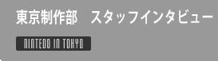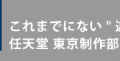 |

|
|
| 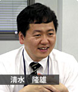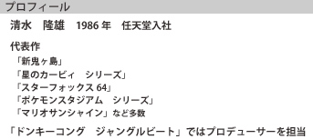 |
|
| 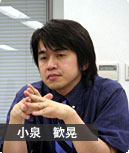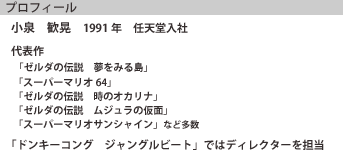 |
|
| |
| 任天堂の東京進出、その裏には立ち上げスタッフの汗と涙が隠されていたようです。新たな試みは楽しいこともいっぱいですが、反面そのリスクや労力たるや相当なもの。がんばるスタッフの思い、東京で求めるパワー、そして広くアピールしたいこととは？ 東京制作部の設立スタッフに、本音の部分をインタビューしてきました。 |

| N.O.M 東京制作部が設立されるまでの経緯を教えてください。 |
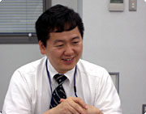清水 任天堂は以前から、東京にも開発の拠点を置きたいというビジョンを持っていました。『マリオサンシャイン』が完成した頃、「東京で開発を立ち上げよう」という話になり、僕が手を挙げて立候補し、さらに小泉に声をかけたんです。やはり東京には沢山の優秀な人材がいるだろうということ、そして「こういうものを送り出したい！」という熱意を持っている人がいるはずで、そういう人たちと新しい遊びを作りたかったという背景があります。
小泉 もともと1986年のディスクシステムができた頃には、東京に開発拠点を作ろうという展望はあったんですが、スーパーファミコンの開発、NINTENDO64、ゲームボーイアドバンス…とどんどん忙しくなってきて、東京の開発をどうするというところまで手が回らなかったんです。近年になって、リーダーとしてやっていけるスタッフがかなり育ってきたということで、じゃあ改めて東京に開発拠点を作ろうということが具体化したわけです。
清水 スタッフの募集も昨年の設立時からずっと継続しておこなっています。宮本の意向で、「時間をかけてでも熱意、能力のある人を採用したい」ということで。やはり言われたことをこなすだけの作業者ではなく、分野に限らず自らディレクションができる人が欲しいんですよね。「これが作りたい！」という熱意があって、これまではそういう環境を得られなかったという人たちに来て欲しいんです。 |
| N.O.M いまでも引き続き人材募集をしているということですが、どんな人を求めているんでしょう？ |
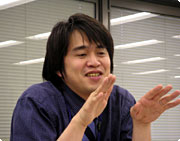小泉 本社の開発は、みんな友人のような関係でした。お互いに意見を言えて、相手の言うことも聞き入れて、話し合って…というような。だから東京でも『みんなでゲームを作る』というスタンスを持てる人が来て欲しいですね。
清水 いまはまだ目に見えていないものを作り上げるには、コミュニケーションが不可欠な要素です。東京制作部の各ブースには、中央に丸テーブルがあるんですよ。デスクからクルッと後ろを向けば、すぐに集まれるようになっています。なにかあればすぐに声をかけて、すぐ会話ができるという状態にしてるんです。
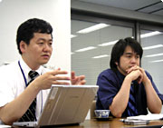小泉 ゲームって机に向かってジリジリして作られるわけじゃなくて、みんなとの雑談から生まれたりするんです。とにかく話す。なんでも雑談していって、そんななかから色々なアイディアが生まれてきます。スタッフの人数が増えたため、フロアが分かれて、スタッフ間のやりとりができなくなってきます。誰が関わっているということもわからないとかいうことが最近は多いんですね。でもコミュニケーションを意識的に取ろうとしなくては、いいゲームは作れないと思っています。
清水 逆に言えることは、最近はコミュニケーションがなくても生きていける世の中になっている、ということですね。ゲームがその要因になっていると言われたくないですから、みんなが一緒に遊べるもの、世代を超えたコミュニケーションが取れるものを送り出したいと思っています。 |
|
|
| N.O.M 東京制作部としては、『ドンキーコング ジャングルビート』が開発ソフト第１弾になるんでしょうか？ |
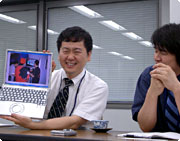清水 そうです。E3でも大好評で、賞まで頂いてしまってとても嬉しいことです。発売は冬の予定ですが、店頭で体験プレイできるようになっているので、ぜひやってみてください。
小泉 東京制作部を設立するまえに、宮本から「ドンキーコングを使ったアクションゲームを」というお題を出されていたんです。
清水 最近のアクションゲームは難しくなってきているので、操作が簡単なゲームを作ろうと思っていたんです。『少ない入力で身体を動かす』というゲームを作れたら、ということでこの形ができてきました。一見ゲームには見えず、でも「これはなんだろう？ 触ってみたい！」と思えるようなものを作りたかったんです。 |
| N.O.M 同じ操作でもコントローラーはいつも使っているけど、タルコンガははじめて…という人もいそうですね。 |
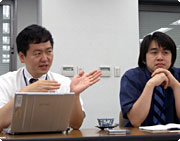小泉 そこがいいんだと思います。子供さんからお年寄りまで、みんなのスタートラインが一緒になるということで。慣れがない状態での一斉スタートですから、"コントローラーの操作"という敷居が高くてゲームに入れなかった人も、これから可能性がありますよね。タルコンガにはマイクがあるので、プレイヤー以外が後ろからちょっかいかけたりもできますし。１個のコントローラーで複数の人数が遊べるのがいいところだと思います。
清水 E3ではこのゲームで笑っている人が多かったんですよね。はじめてのゲームをプレイする時って、ちょっと眉間にシワを寄せて…という人が多いんですが、これは多くの人が笑顔でプレイしてくれました。女性やお年寄りにも人気で、とても嬉しかったです。アメリカの方はやはりオーバーアクションだというのもありますが、それにしても日本人のリアクションは小さいなあと(笑)。全体としては、「間口を広く、そして奥深く」というのをゲーム性に入れたかったんです。 |
| N.O.M 親子なんかで遊ぶと、動きの違いが浮き彫りになって楽しそうですよね。 |
| 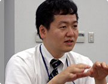清水 そうですね。やっぱり親子って人間関係の原点だと思うんで、親子や兄弟でワイワイ楽しんでもらえたら嬉しいですよね。そうそう、京都から来たスタッフで家族がいるのは僕ら２人だけなんですよ。東京へ来るにあたっては、家族もこちらへ連れてきているんですが、それは宮本が「家族がバラバラになるのはダメだ。仕事が原因で家族を悲しませてはいけない」というポリシーを持っているので、単身赴任ができなかったということもあるんです。 |
|
|
| N.O.M 採用の話に戻りますが、任天堂というと敷居が高いようなイメージもあるのでは？ |
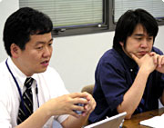清水 「いい大学を出ていないと入れないのでは」と思っている人が多いようですが、それは誤解です。能力があればどんどん採用していきますよ。これだ！ という作りたいものがあって、熱意がある人を求めています。
小泉 元からあるセンスを伸ばしていけるような環境を用意すれば、その人の能力ってどんどん出てくるものです。能力ってその人の生き様だと思うんですよ。僕は映像関係の大学を出て、ゲームの勉強を一切していません。いい大学じゃなくても、専門知識を沢山持っていなくても、アイディアや熱さっていうのは伝わるものですから。
清水 持っている情熱をどう表現できるか、ということがとても大切です。だからコミュニケーションが重要視されるんです。 |
| N.O.M すでに採用されたスタッフさんは、どんな人たちですか？ |
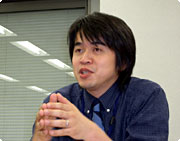小泉 一緒に働いていて、とても楽しい人たちですね。コミュニケーション能力や表現力がとても高く、持っているものを作品に昇華する強い力を持っているように思います。
清水 広く色々なことにアンテナを張っている人が多いです。彼らは「任天堂でこういうゲームを作りたいのに、なんで東京に開発がないんだろう」と思っていた人たちだったりしますね。みんな明るくて、とても楽しいです。先日は東京支店の人たちと合同で飛騨への社員旅行があったのですが、東京制作部の全員が「行ってよかった！」と大満足でした。 |
| N.O.M スキル以外にも、大切な部分があれば教えて下さい。 |
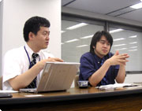清水 思っていなかったことや嫌なことでも、「やってみます」と努力できること。相手がなにを意図して依頼したのかを汲み取ってあげられる人がいいですね。相手のニコッと笑う顔が見られるように行動できる人が必要なんです。我々はなぜゲームを作っているかというと、名声やお金のためではありません。自分の子供や友人が「あのゲーム、楽しかった」と言ってくれた時や、店頭でユーザーさんがソフトを手に取ってくれた時は、涙が出るほど嬉しいんです。逆に「つまらない」と言われたら本当に申し訳なく思いますし、そうならないために一所懸命やっているんです。だから、そんなスタンスが取れる人だといいですね。
小泉 それから、きちんと挨拶ができるといった社会人として最低限の礼儀がなければ、チームプレイは難しいですよ。あとはストレス耐性。やはり開発の現場はとても厳しいので、それなりのストレスに耐えうるものを持っていなければ、続かないと思います。
清水 柔軟性がある人がいいですね。ゲームが面白くなる方向へどんどん変化しますから。それと、こちらの投げかけを否定するだけでなく、新しいアイディアを提供するところまで出来る人なら大歓迎です。
|
| N.O.M これから応募しようとしている人へのメッセージをお願いします。 |
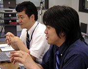小泉 やはりディレクターとして一緒に仕事するので、友人関係が築ける人に来て欲しいですね。遠慮せずに意見交換ができて、古くさい言い方ですが同じ釜の飯を食うような感覚の仲間になってくれる人。ゲーム作りは厳しいものですが、そのなかでも楽しくやっていければと思います。『厳しく、そして楽しく』がモットーです(笑)。
清水 任天堂としては、これまで積み重ねてきたゲーム作りのノウハウがありますので、それを使って新しいアイディアを具現化するのを手伝ってあげたいと思っています。作りたいものがあり、情熱のある人が来てくれれば、それを世の中に出せるよう協力したいと考えています。これは任天堂としても大きなチャンスですから、自分のプランを任天堂ブランドとして世界中の人に遊んでもらいたい！ と思う人はぜひ応募してください。 |
| N.O.M いいスタッフが増えるといいですね。ありがとうございました！ |
|
|
|
|